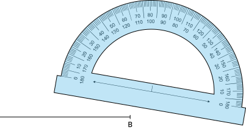
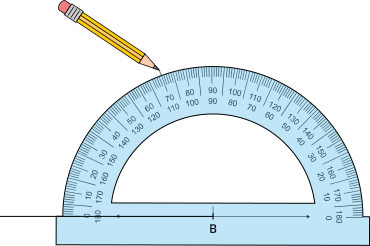
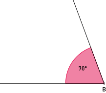

E1
- Droites
Construction d'un angle :
On place le rapporteur sur le sommet

On aligne le rapporteur avec la demi-droite et on mesure 70°

On trace la demi droite.

Construction d'un angle de 61° :